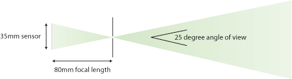
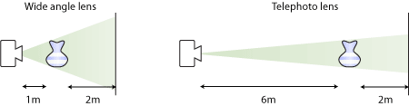
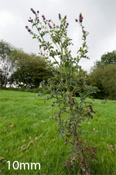
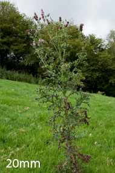
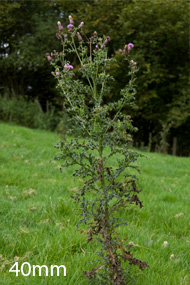
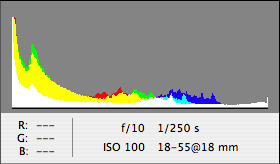
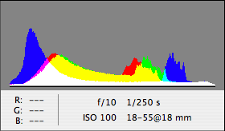

Illustrated with photos wot I ‘ave taken
This is a beginner’s guide for computer geeks who want to be digital artists. Specifically:
Roll over a section of the diagram
There is a lot of material in this article, so I suggest you have your camera with you as you read it and try out the techniques as you go along. If you don’t have a camera yet then you can still enjoy this article; however if you do intend to buy a camera sooner or later, I suggest doing so before you read. Check out the buying advice at the end of the page.
Introduction
An extended apology: Most authors of photography guides are experienced professionals, and speak with the authority of the published photographer. Instead I write this beginner’s guide with the authority of a beginner. I flatter myself that I am better placed to advise the beginner geek on how to learn to use a camera than the professional photographer is: I have just been a beginner myself, so what was confusing and what was simple is fresh in my mind.
Speaking of my being a beginner, this is the first long article I’ve written. Do e-mail me and tell me what you think of it. bernie at berniecode dot com.
</apology>
This is the guide I wish someone had written for me when I started 3 months ago. It’s much shorter than photography books that cover the same topics because it’s a computer geek’s guide. I skip right over the basics of using a camera because you can guess your way through the basics or even read your camera manual (wimp!). I skip any advice about composition or artistic technique because there are better guides that cover those (though I might give it a shot next month). I use terms without defining them because I assume you can use Wikipedia if you need more detail.
For further reading covering field technique and composition I unreservedly recommend John Shaw’s Nature Photography Field Guide. Also, the National Geographic field guides are said (by my sister) to be good.
If you want to be a digital artist then you’ll need to be so comfortable using your camera that the exposure controls are second nature to you, so you can focus yourself on composing the scene that you want. This guide tries to get you to that point as quickly as possible. Some otherwise excellent photography guides take ages walking through the basics of exposure before gradually eking out the advanced details. This will never do: you’re a geek and can be dropped in at the deep end.
This guide doesn’t even try and address how to create a composition that qualifies as art, but this one does, and the book Photography and the Art of Seeing goes further.
Onwards…
Digital SLR systems
For this article I’ll be assuming that you have an SLR camera*. The distinguishing feature of an SLR is that when you look through the viewfinder you see through the lens. This means that you can view the picture pretty much exactly as it will look when you take it. You can also change the lens mounted on the camera body to alter the look of the photo. The technical details are quite interesting, but you don’t need to know them to use the camera.
* The Point & Shoot alternative
this fascinating bonus content
When you take a picture with a digital SLR you allow an amount of light through a lens, focusing it onto a bit of silicon called a image sensor that contains light-sensitive cells that record an image.
The amount of light that you allow in is called the exposure. Getting the correct exposure is most of the effort of learning photography, and hence the main thrust of this article. Playing with creative effects like long exposure is much easier once you have exposure down to second nature.
Focal length
Focal length is the most obvious way in which a lens affects a photo: it controls the angle of view, and hence how much of the scene is included in your photo. The reason that it is measured in focal length rather than degrees, is that the angle of view yielded by a certain focal length depends on the size of the camera’s image sensor. This relationship is easy to see in a diagram of a pinhole camera, where the focal length is the same as the distance between the pinhole and the film:

With a drum roll to celebrate the first time in my life that trigonometry has had any practical purpose, the angle of view is given by the formula arctan((<sensor size>/2) / <focal length>) x 2, for reasons that should become obvious if you split the diagram above into right-angled triangles.
If this doesn’t sound like an intuitive way of working out the angle of view, try this: you can visualise how focal length will affect the angle of view by imagining looking through a piece of card with a rectangular hole in it the same size as your camera sensor (36mm x 24mm for a full-frame camera, 15mm x 22.5mm for an APS-C camera). If you hold the card 200mm from your eye, that’s the view through a 200mm lens. Hold the card twice as far from your face and you’ll see half as much through it.
So doubling the focal length is just like cropping the photo to half of its width and height and blowing up the result to full size, except without the loss of resolution that would occur if you did that in Photoshop. Everything else about the picture remains exactly the same.
Geeky aside – camera body crop factors
this fascinating bonus content
The landscape shots above were taken with a Canon 30D digital SLR with an APS-C image sensor about 22mm wide. Traditionally, lenses are designed for film cameras with a 35mm film size, so the lens will project a 35mm wide image onto the back of the digital camera. Because of the smaller sensor size, the camera body effectively crops the image down to 0.625 of the width and height. Recall that cropping an image to 1/2 its size is exactly the same as multiplying the focal length by 2 (1/0.5 = 2), so cropping an image to 0.625 of its size is exactly the same as multiplying the focal length by 1.6 (1/0.625 = 1.6). This is why the 30D is said to be a ‘1.6x crop factor camera body’.
It is often said that these cameras multiply the focal length of a lens by 1.6. Now that you understand focal length you know that they do nothing of the sort – the focal length of the lens stays the same, but the smaller sensor size yields a narrower angle of view, equivalent to a lens 1.6 times longer on a 35mm camera.
A smaller sensor may seem bad, and it’s true that they offer slightly lower quality and resolution than full size sensor cameras like Canon’s 5D, but they are popular with photographers who use telephoto lenses a lot since they boost the effective length of their lenses for free, saving them money and weight compared to buying a lens 1.6 times longer. With the growing popularity of APS-C camera bodies, lens manufacturers have begun to make lenses that don’t cast a full 35mm image on the camera, such as Canon’s EF-S series or Sigma’s DC series. This means that they can be made smaller, lighter and cheaper for the same image quality, the only downside being that they can’t be used on cameras with full size image sensors like Canon’s 5D. You therefore save money twice: once because you can buy shorter lenses, and again because you can use cheap EF-S and DG lenses.
On the other hand however, high crop factor bodies limit your choice of wide angle lenses. For APS-C camera users there is simply no lens as wide as the Sigma 12-24 or as fast as the Canon 24mm f/1.4. If you want the highest quality wide-angle photography, especially in low light, you have little choice but to buy a full-frame camera.
Canon and Nikon offer 1.6x and 1.5x bodies respectively, while Olympus and other members of the four thirds group offer 2x bodies.
Focal length and perspective: OK, backpedaling time. If two photos are taken from the same position at different focal lengths, then the longer focal length photo will look like a crop from the middle of the shorter focal length photo. However, often a photographer will change position as she changes focal length. When you’re shooting a specific subject you will use a wide angle lens and get right up close to the subject, or a telephoto lens and stand back; either way, the subject fills the whole frame, but the perspective will look very different:

Using a wide angle lens means that the camera is much closer to the subject than the subject is to the background. This exaggerates perspective and makes the background seem small and distant. The reverse is true with the telephoto shot, which includes less of the background while making it appear closer to the subject. This thistle was shot with 3 different focal lengths:
  
Stops and exposure settings: the basics
When you take a picture you allow an amount of light through the lens, focusing it onto the image sensor. The amount of light you let in is measured in stops. Stops are a relative measure of lightness: you can’t say “there are three stops of light coming from that surface”, but you can say that one surface is three stops brighter than another. Adding one stop means doubling of the amount of light that the plate records. In fact, ‘a stop’ is really just photographic slang for a doubling. On old cameras, stops were literally dents in a dial that made it easy to stop when you reached the desired setting. We measure light like this because the human eye perceives each doubling to be an equal increase in light.
Using a relative measure makes sense because there is no such thing as a standard amount of light that equals grey. How bright grey is depends on how strongly lit the scene is; a dark granite rock in bright sunshine actually has more light reflecting off it than than snow at twilight. It is not the absolute brightness of objects in your scene that matters, but their brightness relative to each other, or how many stops apart they are. When photographing these objects you adjust the exposure settings to make sure that the twilight snow still looks white and the sunlit rock looks dark.
The amount of light you record is controlled by the camera’s exposure settings: aperture, shutter speed and sensitivity. Opening the aperture by a stop or decreasing the shutter speed by a stop or increasing the sensitivity by a stop all have the effect of doubling the brightness of your scene. However, the shutter speed and aperture have other aesthetic effects that affect how your picture looks in a way that is very hard to remove or replicate in Photoshop, so you must make a decision when you shoot.
Shutter speed
The shutter speed is considered an exposure setting because opening the shutter for twice as long lets in twice as much light which increases the exposure of the whole scene by a stop. However you can also use it aesthetically: faster shutter speeds freeze a moving subject, slower speeds record a motion blur. Neither is ‘correct': a photo of a stream with a 1/800 second shutter would record each sharp sparkling droplet of water frozen in mid-air, whereas a 4 second exposure would render the stream as a softly flowing ethereal smoke. Either can look beautiful.
{kind=link}
{kind=link}
Aperture, or 1, 1.4, 2, 2.8, 4, 5.6, 8, erm, what the f***?
Lenses have an aperture to control the amount of light entering them. This is an iris that can open and close to allow more or less light in. Aperture is measured in ‘f numbers’ – written f/x where x is the ratio of the focal length to the aperture width. Low f-numbers mean wide apertures letting in more light. Aperture has a reputation for being complicated so some guides suggest that you just memorize the f-number sequence and ignore the internal details. Being a geek, you’ll find it much simpler when you understand why it is measured like this.
The first supposedly confusing thing about aperture is that it is not measured as a width but as a ratio of focal length to width. This makes more sense if you consider that the scene you’re photographing is a light source. Recall that doubling the focal length will half the width and height of the bit of the scene that you project onto the camera plate. Therefore at double the focal length, only 1/4 of the scene area is providing light, so the aperture area must be 4 times as large to compensate (i.e. the aperture width must double). A constant f-number means a constant amount of light entering the aperture regardless of the focal length.
The next supposedly confusing thing about aperture is that the f-number sequence goes in stop increments: 1, 1.4, 2, 2.8, 4, 5.6, 8, 11, 16, 22, 32. There is a logic to this. A 50mm lens with a 50mm aperture will have an f-number of f/1 (the ratio of the focal length to the aperture diameter: 50/50 = 1). If you want to halve the amount of light reaching the sensor you must halve the area of the aperture. To half the area of a circle you divide the diameter by 1.4 (give or take), and since diameter is the denominator in the f-number equation, this means that the f-number is increased by a factor of 1.4. Each f-number is 1.4 times the previous one and lets in half as much light. When someone says “close”, “reduce” or “step down” the aperture, they mean increase the f-number.
Like shutter speed, aperture affects the look of the photo, specifically the depth of field. At narrow apertures the whole of a scene will be in focus, whereas at wide apertures only the bit of the scene that you focus on will be on focus; as is clear in the case of these cheap fake flowers:
{kind=link}
{kind=link}
The nature of the out-of-focus blur that an aperture produces is called bokeh, a term coined by a magazine editor sick of hearing people mispronounce the Japanese word ‘boke’ (meaning blur) to rhyme with smoke. Good on him, but I’m still not sure how I’m supposed to pronounce it.
Long focal lengths and bokeh: Using a long focal length lens appears to make the background more blurred. In fact the background is just as blurred, but is larger. This is easier to see in a photo that only contains the out of focus background:
In both shots each leaf is just as blurred relative to its own size, but in the wide angle there are more leaves and each one is smaller. In either shot you would reposition the camera so that the subject filled the whole frame. The long focal length therefore increases the size of the background relative to the subject, increasing the apparent blur. This is useful in portraits, when background detail only serves to distract from your subject.
Depth of field in greater… ahem… depth (sorry)
Depth of field is a huge topic, so I’ve written another article exclusively about it.
Sensitivity
Historical aside
this fascinating bonus content
The sensitivity of the camera’s plate is measured in ISO sensitivity units which were originally used to measure the sensitivity of chemical film. Most digital SLRs offer a range from 100 to 1600, with 100 being the least sensitive. Some offer lower or higher ISOs; as of September 2007 the champion is the £3,400 Nikon D3 with a maximum ISO setting of 25,600.
Sensitivity is a very useful exposure setting, because it (almost) doesn’t affect the look of the final image, so can be used to help you achieve a combination of aperture and shutter speed that gives you the look you need. Take this shot for example:
{kind=link}
The extreme depth of field required a narrow aperture of f/22, ensuring that the grass and mountains were sharp, and my camera’s meter decided that a shutter speed of 1/15 second was required to correctly expose the image. A breeze was causing the grass to sway so much that a shutter speed of 1/60 was required to freeze it. 1/60 is 4 times faster than 1/15, so the scene would be underexposed by 2 stops. I increased the sensitivity by 2 stops from 100 to 400 and the scene was correctly exposed.
There is a caveat: noise. At very high sensitivities the picture becomes noisy. This is because at higher ISOs you are making an image from a smaller amount of light, so the signal to noise ratio drops. As a last resort you can try to remove this noise in Photoshop, but this can also remove fine detail so it is better to get a clean photo in the first place.
The following set of magnified images show individual pixels from a photo of a lamp fitting at various ISOs. These results will hold true for most digital SLRs. However, top of the line professional models will have lower noise at high ISOs.
However, noise is less obvious in print than it is on screen, so you may well be able to get away with high sensitivities.
As a rule of thumb you should shoot in the lowest ISO that gives you the shutter speed and depth of field that you need. If you need more depth of field but don’t want to reduce the shutter speed, increase the ISO and reduce the aperture. If you need a faster shutter speed and don’t want to lose depth of field by opening up the aperture, increase the ISO and the shutter speed. If you’re shooting a still landscape on a tripod at ISO 800 and 1/100 second shutter speed, you’re just wasting image quality: reduce the ISO to 100 and the shutter speed to 1/12 second. Some SLRs and most Point and Shoot cameras have an Auto ISO setting, which selects the lowest ISO that will give you a reasonable shutter speed. What qualifies as “reasonable” is an exercise left to the manufacturer, so you may still need to set the ISO manually if your camera’s choice isn’t appropriate.
I find that far more of my shots are ruined by motion blur caused by slow shutter speeds than by noise so don’t hesitate to crank up the sensitivity if you need to. In addition, it is often possible to remove much of the noise on in processing. The following crop is from a picture that had to be taken at my camera’s highest sensitivity, then processed to remove noise:
Metering
Digital SLRs have built-in light meters that calculate the required exposure settings to expose the object you’re pointing the camera at as a medium tone. However, the camera doesn’t know what you’re pointing at, and will happily expose a white subject as grey unless you correct the exposure settings. You use the exposure dial to tell the camera to render the object that you are pointing at as a lighter or darker tone.
There are around 5 stops between apparent black and white in a typical photo, so black is 2.5 stops below mid-toned and white is 2.5 stops above mid-toned (take this as read for now, I cover it in more detail in the next section). Strangely, my Canon 30D’s exposure dial only covers 2 stops, so I have to use manual mode if I need absolute whites or blacks.
You can set your camera to spot metering which meters a small area in the centre of the scene, centre-weighted metering which meters the whole scene but pays more attention to the middle, or evaluative metering which meters the whole scene. Especially for evaluative metering, check the histogram (see the next section) right after shooting to make sure that the exposure came out correctly.
The metering lock button lets you meter a specific object, lock the exposure settings for that meter reading, and then point the camera somewhere else to take the picture. This is how you meter an object that is not right in the middle of your composition.
{kind=link}
{kind=link}
Digital SLRs have four useful exposure modes that work with metering. Program mode chooses an aperture and shutter speed for you, leaving you free to think about composition. Aperture priority mode lets you choose an aperture, and the camera will set the shutter speed to correctly expose the scene; this is the most useful mode because it makes it easy to get the best depth of field possible (set to minimum aperture) or the fastest available shutter speed for the current lighting (set to maximum aperture). Shutter priority mode lets you pick a shutter speed and the camera will set the aperture. In all of these automatic modes, you point the camera at an object and then use the exposure dial to tell the camera how light or dark that object should be.

In manual mode the exposure dial works the other way round: you choose an aperture and shutter speed, and the metering system will set the exposure dial to tell you how light or dark the object you’re pointing at is:
When I’m taking time to work a subject, carefully setting up shots with specific effects in mind, I like to use manual mode since it forces me to think about the exposure settings. When I’m walking around looking for interesting moments to take snap shots of, I stick to the automatic modes.
Histograms
Digital SLRs come with a histogram display so that you can tell how an image is exposed. Set your camera to show you an RGB histogram of each shot after you take it so you can tell if it is correctly exposed and retake the shot if necessary. Later in this guide I show you how to correct a poor exposure on a computer, but you’ll get better results and a smug feeling of competency if you get it right in the field.
Incorrectly exposed images produce histograms with large spikes at either end; correctly exposed images look like smooth bell curves. There is an example of each in the next section.
Looking at the histogram after each shot is the fastest way to get a feel for correct exposure.
Stops and exposure: advanced stuff
Recommended article:
Notes on the Resolution and Other Details of the Human Eye.
A fascinatingly geeky comparison of the dynamic range and other optical properties of the human eye those of a camera.
Every device for capturing light has a dynamic range – the number of stops between the darkest black and the lightest white that can be captured. Shades outside this range will be clipped, appearing featureless black or white. This is why, when somebody shines a torch at you at night, you can’t see their face – the human eye can perceive 15 stops of dynamic range, and the torch bulb is more than 15 stops lighter than their face.
On a film camera there are 5 stops between the darkest black and the lightest white. This is a much smaller dynamic range than the human eye can detect. This means that if you have a scene with say a bright cloudy sky and a dark shaded valley, you can see both in detail at the same time but a camera can not. If the shadows in the valley are more than 5 stops darker than the white of the clouds, then either the clouds will be a wash of overexposed white or the shadows will be a mass of underexposed black.
Digital SLR camera sensors actually capture much more information that just the 5 stops that you see on your screen. My Canon 30D captures 9 stops in total: 2 stops on each side of the 5 stops you can see. It uses this information internally to adjust white balance, but in order to reproduce the rich, high-contrast look of traditional film the 9 stops are clipped down to 5 to produce a JPEG file that looks like a traditional film print.
Traditional film photographers got around the 5-stop limit by using graduated neutral density filters – attachments for the front of a lens that shaded the sky, decreasing its brightness so that the sky and shadows could both be properly exposed. Don’t bother: the digital artist has two tools not available to the film photographer that are far more flexible. By using RAW image adjustment and combining multiple shots in Photoshop, you can create your perfect exposure back in the office, leaving you free in the field to focus on choices that can’t be changed later like motion blur and depth of field.
this fascinating bonus content
{kind=link}
{kind=link}
RAW image adjustment
Digital cameras actually capture 9 stops of dynamic range and then clip it down to 5 stops when the image is converted to JPEG. However, if you set your camera to shoot in RAW, all the clipped information will be saved so you can change your mind about how you want it to be clipped later.
Here’s an example of a tree that I shot against a bright sky on a sunny day:
{kind=link}
The camera’s automatic metering set the aperture to f/10 and shutter speed to 1/250 second which recorded the sky correctly as a light blue with bright white clouds. However when I looked at the scene in person the tree was a brilliantly backlit bright green, but here it is a dark silhouette – around 2 stops too dark compared to how my eyes saw it. This histogram of all individual red, green and blue pixel values shows the problem clearly; the spike to the left is caused by all the detail darker than the lowest of the 5 stops being clipped to plain black:

If I manually increased the exposure of the whole scene by 2 stops, say by decreasing the shutter speed to 1/60, the sky would have lost all detail and become a wash of white. The solution is to use a RAW adjustment program to selectively lighten the underexposed shadows without lightening the correctly exposed highlights. Your camera should come with a program that does this, but if Canon’s program is anything to go by it won’t be nearly as usable as Photoshop’s RAW file import dialogue. Canon’s program is said to produce a higher image quality; personally I can’t tell the difference.
Photoshop gives you a ‘Fill light’ slider that increases the brightness of the shadows selectively:
{kind=link}
And as you can see from the new histogram, the spike at the left is gone and replaced with a nice smooth bell curve:

Of course there is a cost – loss of contrast in the highlights, which had to be compressed to make room for the shadow detail. Compare the second histogram to the first. The three peaks for red green and blue to the right of the graph correspond the gradient across the sky. They exist in both histograms, but in the second one they are narrower: the difference between the lightest and darkest bit of sky is smaller than in the first exposure, and hence the gradient across the sky is less dramatic. In this case, the trade-off is easily worthwhile.
Combining multiple shots
RAW image adjustment works well when you have no more than a couple of stops underexposure or overexposure, because if you go more than 2 stops past the 5 stop limit of a scene’s dynamic range, you exceed the 9 stop dynamic range of your camera’s sensor and any detail in the poorly exposed areas is lost for ever.
Outside the window of my Norwegian holiday cabin where my wife is sunbathing it is a bright day; inside where I am hunched over a laptop it is much darker:
{kind=link}
{kind=link}
This 5 stop difference is far more than we can hope to recover with RAW image adjustment. If you shoot both exposures, you can combine them in Photoshop using a layer mask to create an image that would be impossible using a film camera:
{kind=link}
I created the layer mask by inverting the dark image, blurring it, increasing the contrast and retouching a few areas with the brush tool.
Make sure you shoot with a tripod so that the two exposures overlay accurately (unlike in my hurried attempt, where blurring from hand-holding shows up in the interior shot and rotating / resizing was necessary to realign the images). Then take both photos into Photoshop as layers, add a layer mask, and use the brush tool on the layer mask to literally paint detail into the shadows. It’s surprising how well it works.
White balance
Artificial light is much warmer than sunlight, with more red and less blue in it. Your eyes adjust to the current light temperature and after a while you won’t notice it. Cameras do not automatically adjust however:
{kind=link}
{kind=link}
Cameras have a setting to correct white balance as you take the shot, but I find it easier to leave the camera alone and correct the white balance on my computer.
For a detailed technical explanation of what’s actually happening, check out this article: Understanding White Balance.
Filters
Filters were an important part of the prehistoric photographer’s equipment. Coloured filters could enhance a scene, warming or cooling it to compensate for different kinds of lighting. Graduated neutral density filters decreased contrast within a scene, allowing a bright sky and dark land to be captured in one exposure.
The digital artist doesn’t need most of the filters because the effects can be applied digitally – white balance settings on your camera or in Photoshop affect the scene warmth, and the advanced exposure techniques covered above are much more flexible than graduated neutral density filters.
There are a 2 filters that are very useful however, because they change the image in ways that can’t be reproduced by a computer:
Polarising filters
If you take any photos outdoors, you need one of these.
Light scattered through the upper atmosphere becomes polarised by ice particles, or something like that, I forget the details. This polarisation survives being reflected off shiny surfaces like sweaty foreheads. However, when light is absorbed and re-emitted from a surface as coloured light, it loses its polarisation. Because of this a polarising filter can do two things: remove white haze from the sky rendering it a deep blue, and remove white reflections from surfaces revealing their true colour. Alternatively, if it is the reflections you are trying to photograph, you can rotate the filter 90 degrees to increase their brightness.
Photography on sunny days can sometimes be disappointing because the scene never looks as colourful as it seemed to when you were there. Polarising filters help capture bright scenes as they appear to the human eye.
{kind=link}
{kind=link}
Neutral Density filters
Neutral density (ND) filters are dark filters that reduce the brightness of a scene. You may need them if you like to play with long exposures for artistic effect. Even at the narrowest aperture, a 5 minute exposure will overexpose anything but the darkest night scene. Adding a strong ND filter can allow you to use these extreme settings. An ND filter can also allow you to take photos of very bright subjects without hurting your eyes.
{kind=link}
{kind=link}
ND filters are just another way of affecting exposure, so it should come as no surprise by now that they’re measured in stops. How strong a filter you need depends on your requirements. I just metered a daylight scene at my camera’s minimum sensitivity of ISO 100 and minimum aperture of f/32 and was told that I needed a shutter speed of 1/50 to expose it properly. That is therefore the longest shutter speed I could achieve without an ND filter. If I wanted to take a 5 second exposure, I would need an 8 stop ND filter (1/50 doubled 8 times = 5). If I wanted to do a 5 minute exposure, I’d need a 14 stop filter.
Some filters are sold as, e.g. “8x” filters, which reduce brightness by a factor of eight. This is equivalent to three halving of the brightness, so it is actually a 3 stop filter.
ND filters can be stacked together and their stop values add together.
A warning about filters
With digital cameras it is especially important to buy filters with non-reflective coating, because otherwise light reflected from the sensor can bounce back onto it, causing ghosting. If you spend a lot of money on lenses, the best way to ruin their quality is to put a cheap filter in front of them. I use the Hoya PRO1 super-hard multi-coated range (over £50 for a polarising filter) and have no issues with them.
Accessories
Tripod
You can hand-hold a photograph at a shutter speed of around 1/focal length, i.e. with my Sigma 30mm lens on my 1.6x crop factor body, I must have a shutter speed of at least 1/50 second to reliably hand hold it, and even then the occasional shot may have noticeable blurring from camera shake. Buying an image stabilised lens (and they aren’t cheap) can let you hand-hold a photo at 2 or 3 stops slower than usual. For shots that require slower shutter speeds, you’ll require a tripod and a remote shutter release button to avoid shaking the tripod as you press the shutter (though you can use the camera’s self timer for this).
Monopods are one-legged tripods (unless tripods are three-legged monopods) that offer less stability but greater freedom of movement that makes them more suitable for action and event photography.
Another benefit of a tripod is that it makes it easier to compose a shot. Especially in low light and with telephoto lenses, framing and focusing a shot is hard. Using a tripod lets you carefully set up the shot so that you don’t accidentally clip off part of your scene or introduce a wonky horizon.
In fact, I’d go so far as to say that if you don’t have a good tripod, you are wasting your money buying expensive lenses. I have a Manfrotto 458(B) Neotec (£215) and 468 MGRC2 head (£165). This is expensive stuff, but it increases the proportion of my usable shots far more than a new lens five times that price.
Macro dioptres
Macro dioptres are magnifying glasses that screw onto the filter thread at the end of a lens and enable it to focus on very close objects. They are called dioptres because Jessops wouldn’t be able to charge £50 for a magnifying glass, but for a dioptre, now that sounds like a bargain. Long zoom lenses typically have a minimum focusing distance of 1 to 2 meters. With a Macro dioptre attached they can focus much closer, enabling you to fill the whole photo with an insect for example.
{kind=link}
{kind=link}
Make sure you buy a dual element dioptre, like those from Canon or Nikon. They are optically far superior to the single element ones, and don’t cost much more. A good macro dioptre mounted on a sharp lens produces results just as good as a dedicated macro lens, for a fraction of the price.
The end!
I hope you’ve found this article entertaining.
To subscribe to future photography articles, add this link to your RSS reader.